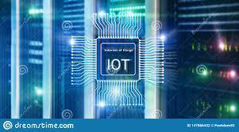

Links:
What's Internet of Things (IoT) ?
The Internet of things (IoT) is a system of interrelated computing devices, mechanical and digital machines provided with unique identifiers (UIDs) and the ability to transfer data over a network without requiring human-to-human or human-to-computer interaction. The definition of the Internet of things has evolved due to the convergence of multiple technologies, real-time analytics, machine learning, commodity sensors, and embedded systems.
Traditional fields of embedded systems, wireless sensor networks, control systems, automation (including home and building automation), and others all contribute to enabling the Internet of things. In the consumer market, IoT technology is most synonymous with products pertaining to the concept of the "smart home", covering devices and appliances (such as lighting fixtures, thermostats, home security systems and cameras, and other home appliances) that support one or more common ecosystems, and can be controlled via devices associated with that ecosystem, such as smartphones and smart speakers.There are a number of serious concerns about dangers in the growth of IoT, especially in the areas of privacy and security, and consequently industry and governmental moves to address these concerns have begun.
